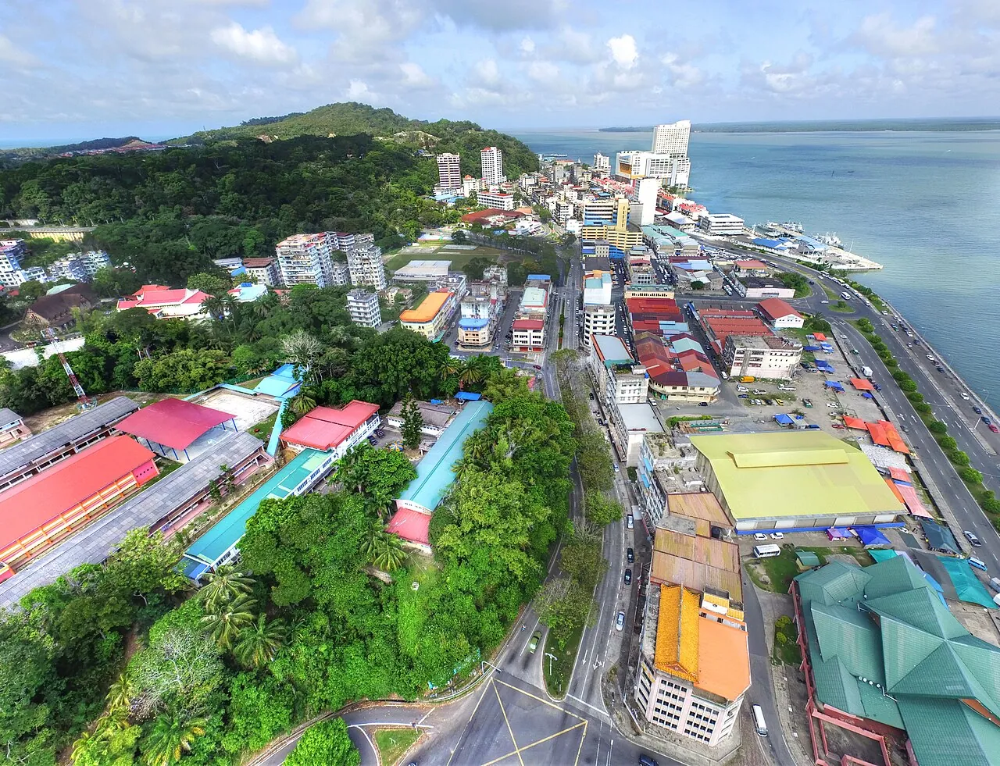
Sandakan Bay, rebuilt
A pinboard of the things the guidebooks skip — a bombed-flat "Little Hong Kong", a leper-island prison break, a colonial croquet lawn, cow-dung-shaped tarts and a nightly two-million-bat exodus. Each find pinned, tagged by where & when.

Sandakan Bay, rebuilt
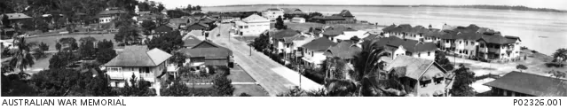
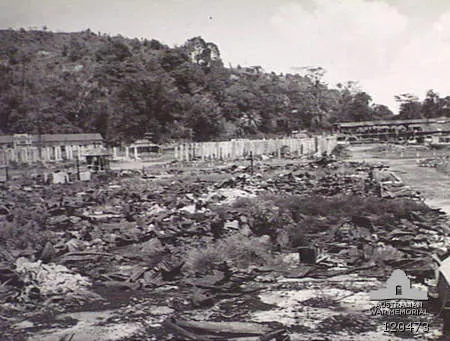
British-coaxed Cantonese & Hakka built a port so Hong-Kong-like it took the nickname — then Allied bombing flattened it, erasing the very thing the name described.
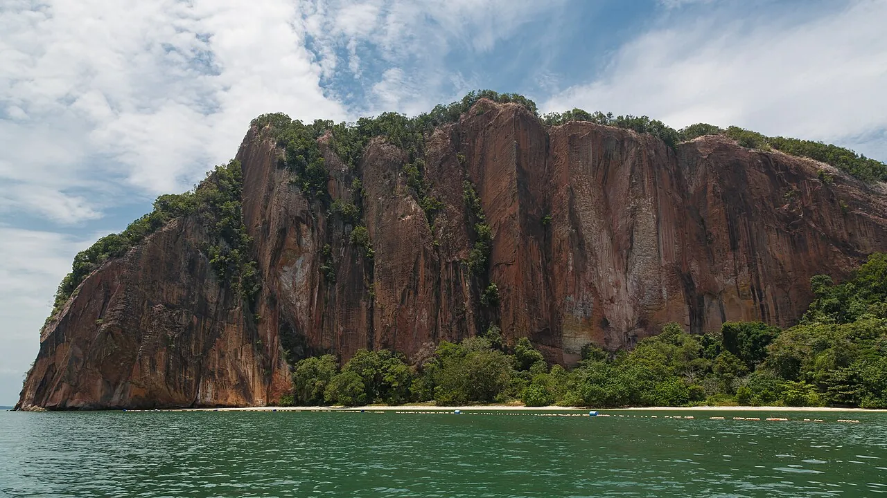
Eight POWs stole a boat from the island's leper colony on 4 Jun 1943 and sailed ~250 km of open sea to Tawi-Tawi — by luck dodging the Death Marches.
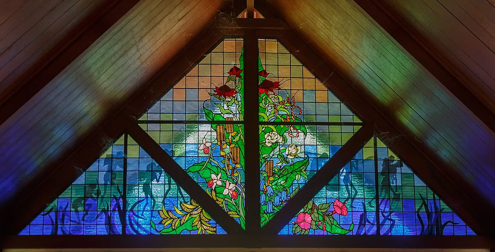
~2,400 Australian & British POWs died here. A rusting excavator, generator & boiler still sit in their original positions in the garden.
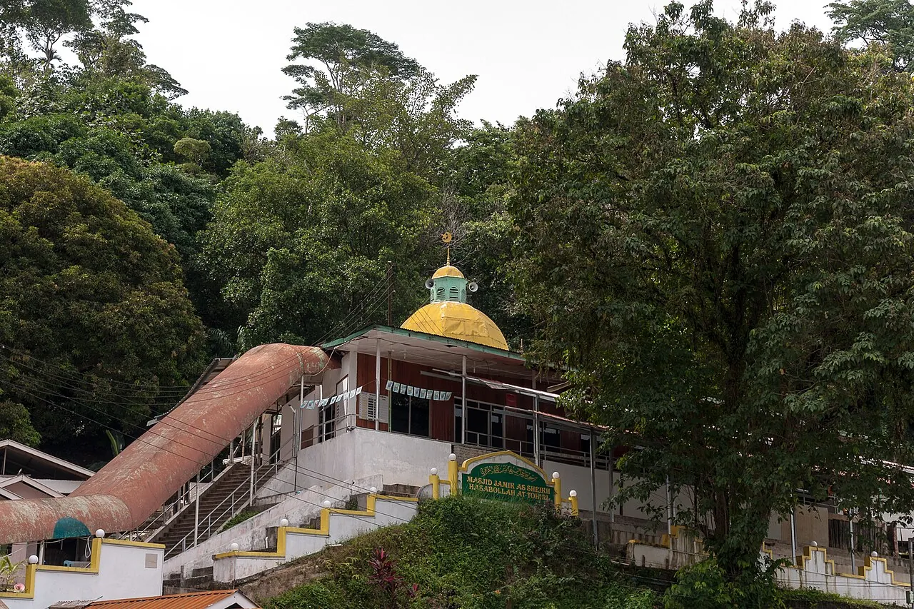
Masjid Jamek (1890) still wears WWII bullet holes in its timber pillars. Land reclamation shoved the sea ~350 m away — a "waterfront" mosque now stranded inland.
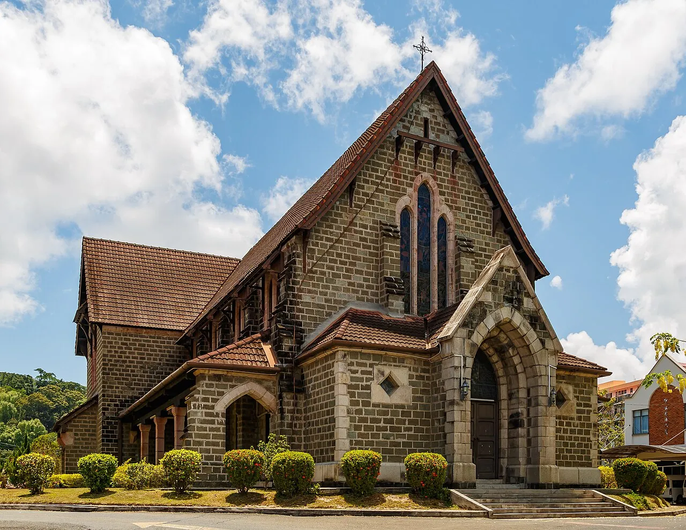
Sabah's oldest stone church, window stone shipped from Hong Kong. The Japanese dynamited St Michael's in 1945 — the granite shell stood through the blast.
Pryer founded it on 21 Jun 1879 and called it Elopura — "beautiful city". Locals kept the older name Sandakan — Suluk for "the place that was pawned". The pawnshop won.
The first European settlement here was renamed Kampong German for its German trading bases — then burnt down by accident on 15 Jun 1879, a week before Elopura was founded.
east of centre[4]
1.5 acres of manicured lawn with an actual croquet pitch on a hill over the bay. Scones, cream and a mallet game — in the tropics, at the English Tea House.
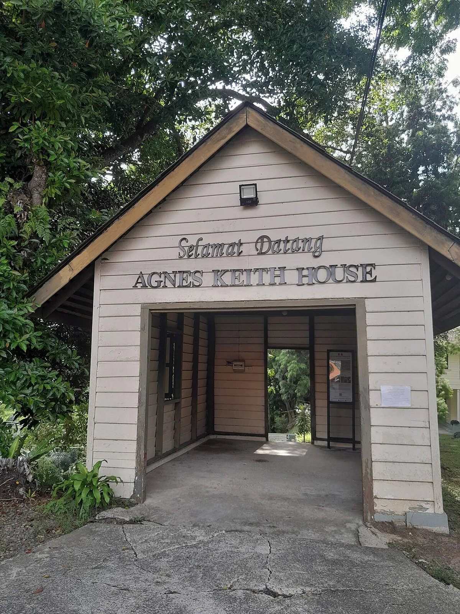
The reconstructed villa of writer Agnes Keith & her forester husband. Her 1939 book gave Sabah its nickname "Land Below the Wind" — it sits just below the typhoon belt.
The Heritage Trail climbs the landmark "Stairs with a Hundred Steps" to a hilltop where colonial officials' quarters once stood — now gone. You climb to a ghost address.
~1.5–2 hr loop[22]
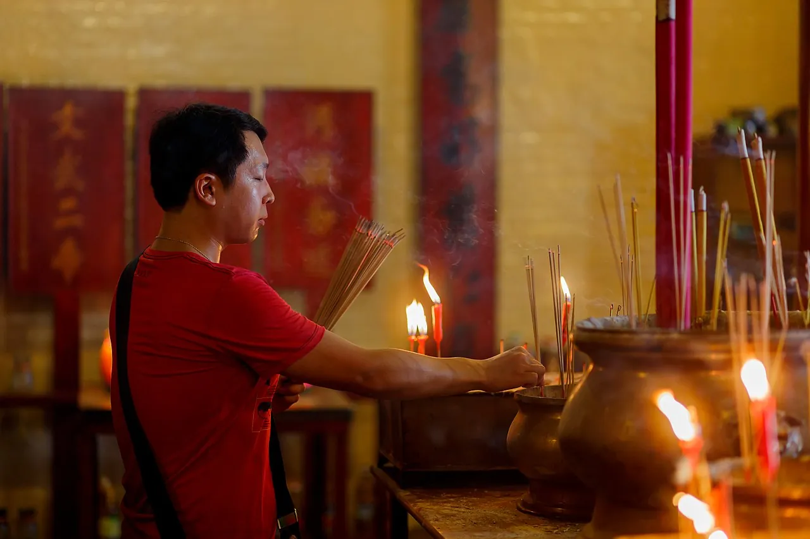
Sam Sing Kung (1887) venerates an unusual trio — the "Three Saints" — and keeps 100 pre-printed Taoist fortune poems for worshippers to consult. Anchor of old Little Hong Kong.
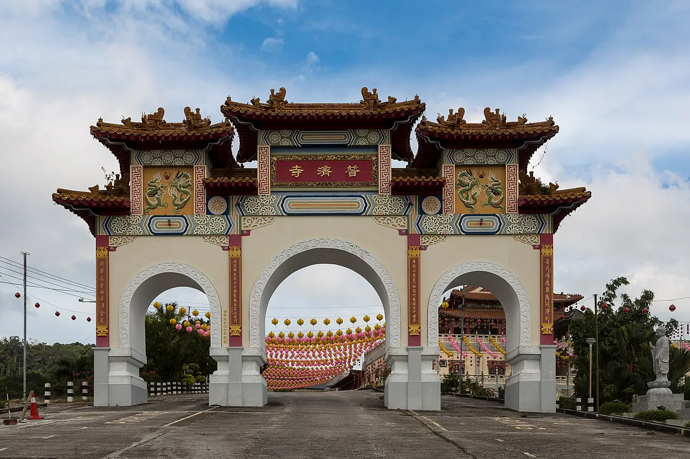
Hilltop Puu Jih Shih's seven-tiered pagoda — one tier per step to enlightenment — doubles as Sandakan's best sunset over the bay.
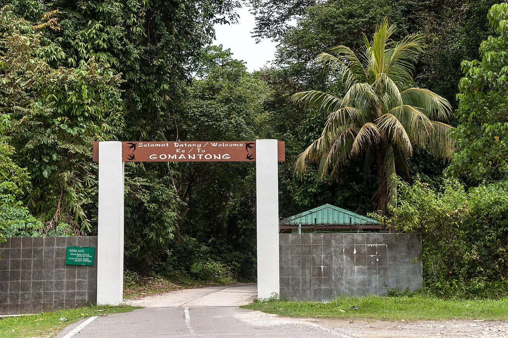
At Gomantong, licensed collectors scale cave roofs on nothing but rattan ladders, ropes & bamboo poles to gather edible swiftlet nests — the bird's-nest-soup ingredient.
A swirling vortex pours out of Gomantong's cave mouth nightly — often chased by bat hawks.
Gomantong[29]
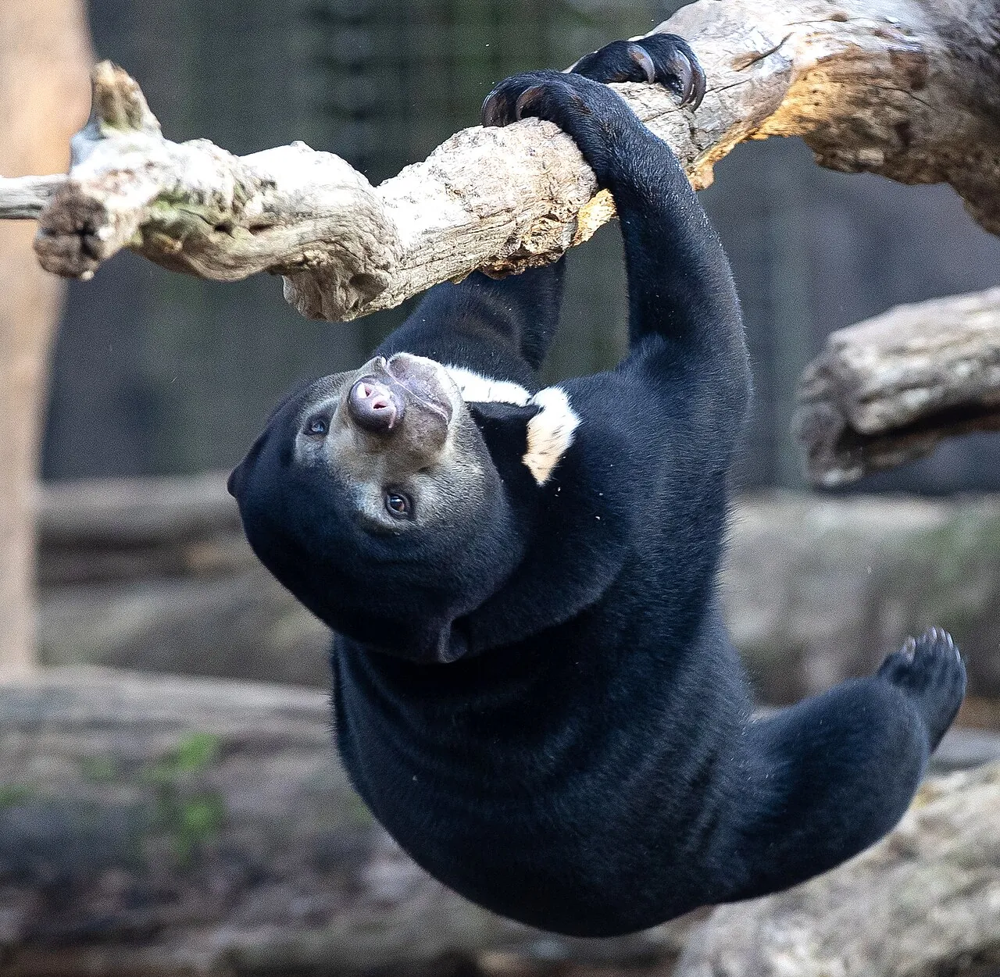
The Sun Bear Centre rehabilitates ~41 sun bears — the smallest bear on Earth, found only in SE Asia, and far too easy to skip beside the famous orangutans.
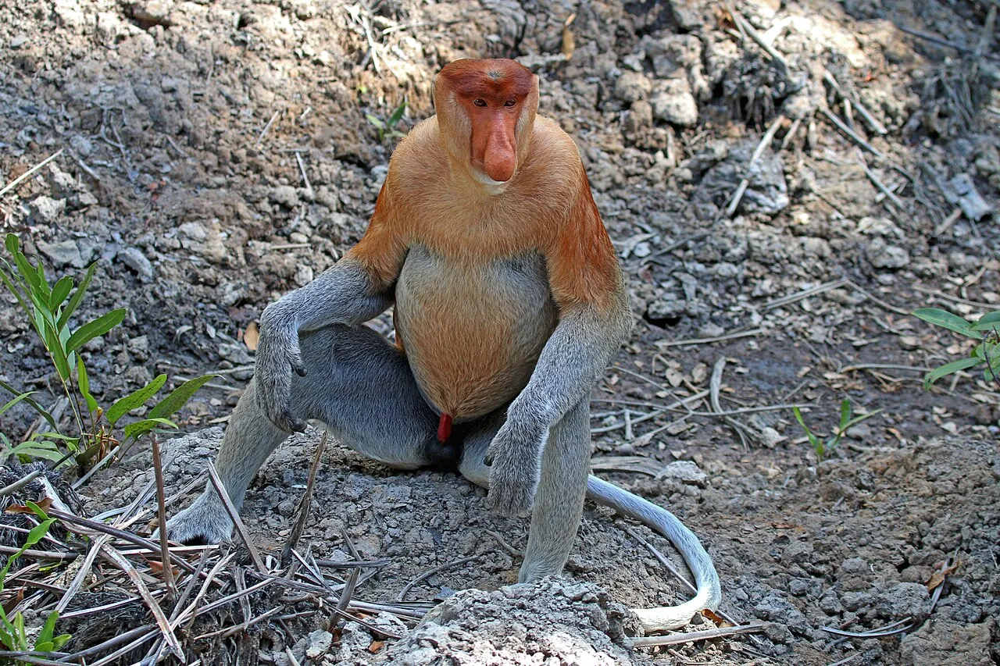
An oil-palm planter spared a 400-acre mangrove pocket after finding proboscis monkeys on it — wild big-nosed monkeys inside a working estate, now Labuk Bay.
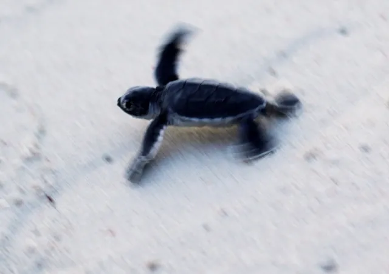
Overnight on Selingan to watch a green turtle haul ashore and lay her eggs at the Turtle Islands Park hatchery — one turtle per night, by the ranger's call.
40 km north[36]
Evening mangrove cruise where thousands of synchronous fireflies light the riverbanks — usually rounded off with a seafood dinner.
mangrove cruise[37]
Malaysia's largest crocodile farm hides a 100 kg Amazonian arapaima in its mini-zoo, 12 km out.
12 km from town[38]
After dark under Sabah's longest canopy walkway (620 m), hunting tarsiers, slow loris, civets & flying squirrels with the Rainforest Discovery Centre.
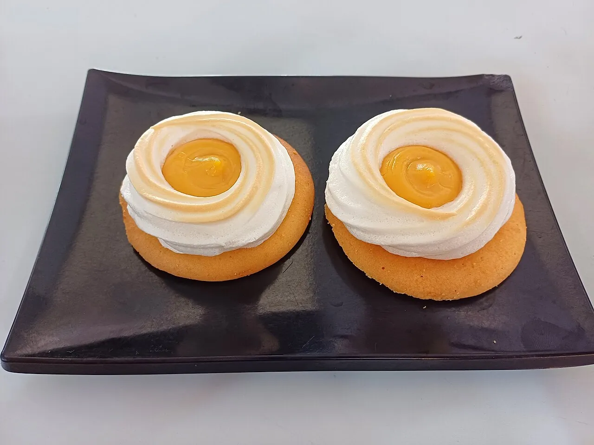
Biscuit, custard, torched meringue — the "UFO tart". Locals proudly call it Cow Dung Tart (牛屎挞) and refuse to rename it. An accident: a baker scorched a batch in 1955. 5 May is now UFO Tart Day.
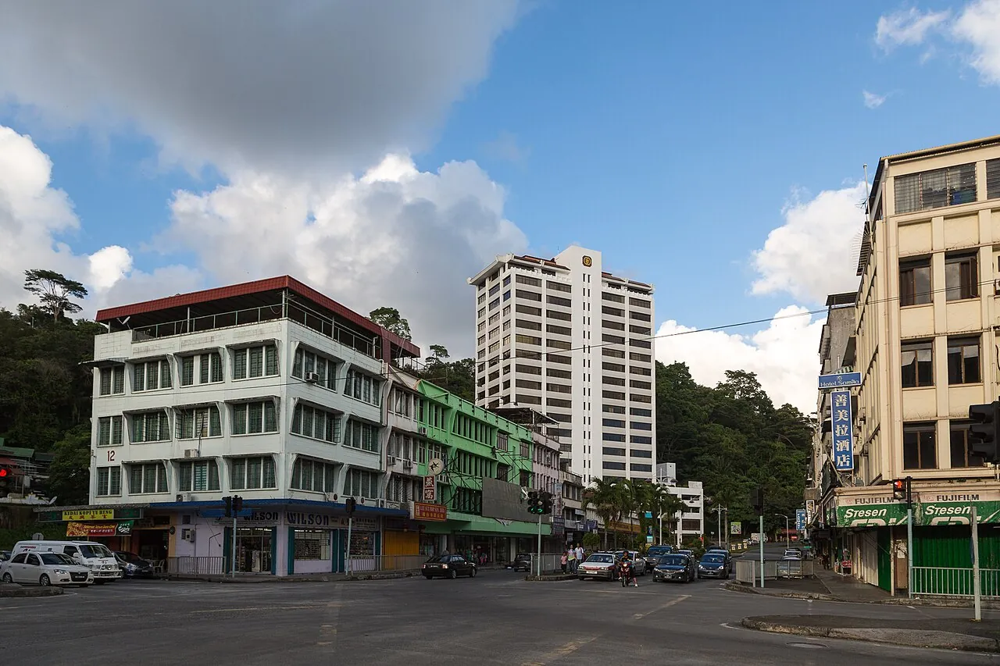
Buli Sim Sim — the original 1879 stilt settlement Sandakan grew from. Plank walkways over the water, with a former fish market expanded into a floating seafood restaurant.
Sabah's biggest, busiest fish market — go at first light for the landings. The local-breakfast move at the three-storey Central Market: dry kway teow topped with deep-fried pork.